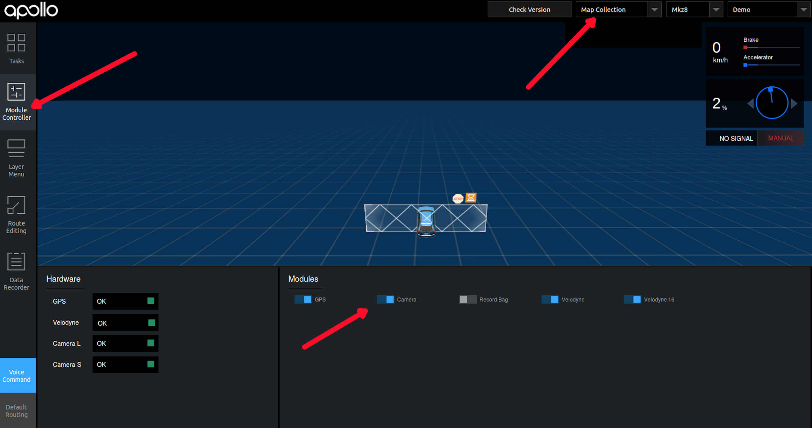
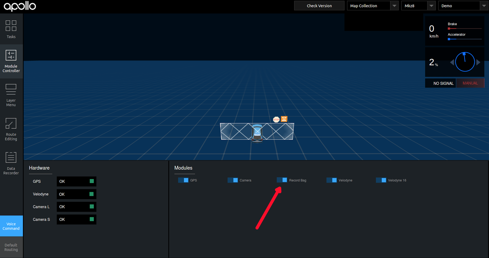

Apollo 2.5 地图采集功能使用指南
本文档主要用来说明如何在 Apollo2.5 中使用地图数据采集的功能.重点介绍了数据采集所 需的软硬件环境,数据采集的流程和注意事项.
软硬件环境准备
1、硬件安装方法参 见Apollo 2.5 硬件安装指南
2、软件安装方法参 见Apollo 软件安装指南
3、传感器标定方法参 见Apollo 传感器标定方法使用指南
4、NVMe SSD 硬盘。为了解决由于 IO 瓶颈导致可能的数据丢帧问题，建议工控机中安装 NVME SSD 硬盘。
5、卫星基站。为了得到精确的制图结果，需要搭建卫星基站，并且保证整个采集过程中采 集车的 RTK 可以正常工作。
数据采集流程
1、启动地图采集模式 Apollo 环境启动参 见Apollo 2.5 快速上手指南
选择[Module Controller]、[Map Collection],打 开[GPS]、[Camera]、[Velodyne]、[Velodyne16]开关。

确认各个传感器状态是否 OK。

2、待确认各个传感器状态 OK 后，打开[Record Bag]开关，开始录制地图数据。

正式采集数据之前，需要车辆静止 5 分钟，8 字绕行 5 分钟。采集过程中需要保证双向车 道全覆盖采集五圈以上，车速 60KM/h 以下，尽量每圈走不同的车道，覆盖完全。在路口区 域无需刻意停留，慢速通过即可。路口区域需对各方向道路外延采集至少 50m，保障道路各 方向的红绿灯及车道线完整清晰。数据采集完成后，需要 8 字绕行五分钟，然后再静止五 分钟。
3、所有采集完成后，关闭[Record Bag]开关结束采集，然后关 闭[GPS]、[Camera]、[Velodyne]、[Velodyne16]开关。

4、数据上传
采集的数据放置在/apollo/data/bag/(采集开始时间,例如 2018-04-14-21-20-24)目录，把 该目录下的数据打包为 tar.gz 压缩文件， 到Apollo 数据官网进行数据 上传。
地图数据生产服务
1、数据权限申请
首先需要注册一个百度账号，登陆百度账号，申请地图制作服务使用权限(仅需申请一次),
如果已经申请过，跳过此步。 
2、地图技术服务
用户可以在该页面进行新建区域、创建制图任务、管理地图数据、跟踪制图进度，下载地图
数据。 
3、数据管理
用户点击“采集数据管理”后可以进入采集数据管理页面，在该页面可以上传多份采集数据， 所有数据上传上传后可以提交采集数据，之后进入制图流程，不能再对数据进行编辑操作。

4、数据下载
当需求状态是”已发布”时，点击“下载地图”可进行地图数据下载。如果需要更新地图，请点 击“更新地图数据”发起制图流程，需重新进行数据上传及制图流程。